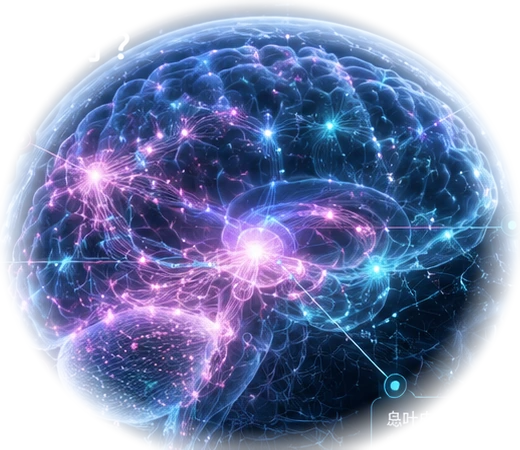

REWIRING / 正在重塑神经路径
CONSCIOUSNESS OS / LIVE INNER TRACE
0.0s / 36s
前额叶皮层决策与自我控制
杏仁核情绪与威胁检测
纹状体奖赏与习惯回路
顶叶皮层注意与身体映射
海马体记忆与情境整合
岛叶皮层内感受与动机
QUESTION / 人生问题
为什么我总坚持不了？
PHASE 01 / 07
现实触发
“今天太累了，明天再开始。”
VOICE / 旁白
为什么你总坚持不了？我们先钻进这个念头。
> INNER_TRACE.logTRIGGEROBSERVER v1.2.4 SESSION #7843.26.11
INPUT 今天很累
SIGNAL task_friction ↑
SYSTEM searching default path...
PERCEIVE UNDERSTAND REWIRE BECOME
查看信号、脑区与章节
AFTER THE DIVE
你已经看见旧程序。下一步是训练新的默认反应。
训练不是“知道更多”，而是在真实触发发生时，把观察者和最小行动练成默认路径。
三维素材：Human Reference Atlas / Allen v1.4（CC BY 4.0）；MakeHuman / MPFB（CC0）。素材署名与来源